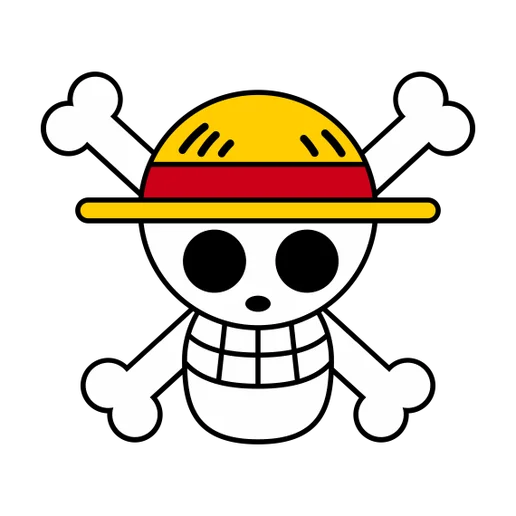

Monkey D. Luffy — Captain
Monkey D. Luffy ate the Gomu Gomu no Mi at age seven, trading his ability to swim for a rubber body that would eventually shake the world. What looked like a foolish mistake in a small port town in East Blue turned out to be the first step toward a dream so enormous that even the World Government couldn't ignore it. Luffy didn't just want treasure or territory. He wanted to be the freest man alive, and the Pirate King title was simply the proof.
Font Weights
Regular (400) — Luffy's casual, carefree moments on the Sunny
Semi-Bold (600) — the quiet resolve before he throws the first punch
Extra-Bold (800) — "I'M GONNA BE KING OF THE PIRATES!"
Try It Yourself
Gomu Gomu no Pistol! Gear Second! Gear Fifth!
Heading Scale
Pirate King
Emperor of the Sea
Supernova
East Blue Rookie
Cabin Boy
Wanted: Dead or Alive
Bounty Lookup
async function getBounty(pirateName) {
const res = await fetch(`/api/bounties?name=${pirateName}`);
const data = await res.json();
return {
name: data.name,
bounty: data.bounty.toLocaleString() + " Berries",
crew: data.affiliation
};
}I don't want to conquer anything. I just think the guy with the most freedom in the whole ocean is the Pirate King.
— Monkey D. Luffy
Jolly Roger Colors
Monochrome
Complementary & Triad
OKLCH Accent
Set Sail
HSL / OKLCH Swatch Palette
oklch(0.95 0.02 260)
oklch(0.87 0.06 260)
oklch(0.72 0.10 260)
oklch(0.52 0.15 260)
oklch(0.38 0.12 260)
oklch(0.53 0.10 260)
oklch(0.50 0.19 260)
Wanted Posters & Media
Quick Actions
Download & Upload
Image Formats


Voyage Gallery
Voyage Log
Crew Dossiers
Monkey D. Luffy
Captain. Gomu Gomu no Mi / Hito Hito no Mi Model: Nika. Bounty: 3,000,000,000 Berries. Dream: become King of the Pirates.
Roronoa Zoro
First Mate & Swordsman. Wields Enma, Wado Ichimonji, and Sandai Kitetsu. Bounty: 1,111,000,000 Berries. Dream: greatest swordsman alive.
Nami
Navigator. Clima-Tact user and cartographer. Bounty: 366,000,000 Berries. Dream: draw a map of the entire world.
Usopp
Sniper. Master of observation haki and tall tales. Bounty: 500,000,000 Berries. Dream: become a brave warrior of the sea.
Sanji
Cook. Black Leg style and Germa enhancements. Bounty: 1,032,000,000 Berries. Dream: find the All Blue.
Tony Tony Chopper
Doctor. Hito Hito no Mi reindeer with seven transformations. Bounty: 1,000 Berries. Dream: cure any disease.
The Will of D.
The "D." carriers have shaped every major turning point in history. From Gol D. Roger who started the Great Pirate Era with his final words, to Monkey D. Dragon who leads the Revolutionary Army, to Monkey D. Luffy who has toppled Warlords, Emperors, and the World Government itself — the initial appears wherever the world is about to change.
Marshall D. Teach took a different path. Blackbeard proved that carrying the initial doesn't guarantee nobility. He killed a crewmate, stole a Devil Fruit from a corpse, and built an empire on betrayal. The "D." isn't about good or evil. It's about the will to defy whatever stands in your way.
Trafalgar D. Water Law discovered the truth about his family's name the hard way — hunted, orphaned, and saved only by the sacrifice of Corazon. He carried that weight for thirteen years before finally standing on equal ground with the Emperors at Wano. The inherited will is real, and it moves through generations like a tide.
Straw Hat Dashboard
Total Bounty
8.8 Billion
Crew Members
10
Islands Visited
50+
Emperors Defeated
2
This Week in the New World
Gear 5: The Warrior of Liberation
When Luffy's heart stopped on the rooftop of Onigashima, something ancient woke up. His fruit was never the Gomu Gomu no Mi — it was the Hito Hito no Mi, Model: Nika, a Mythical Zoan that the World Government had been trying to suppress for 800 years. In Gear 5, Luffy fights like a cartoon, bending reality itself, turning the ground to rubber and grabbing lightning from the sky. It's absurd, joyful, and terrifying all at once.
Zoro's Path to Mihawk
From the East Blue dojo to Wano's rooftop, Zoro's journey is one of pure willpower. He cut through King's flames, unlocked Conqueror's Haki coating, and earned a blade that even Oden struggled to tame. Mihawk is watching.
Trending
Gear 5 · Wano · Laugh Tale · Void Century · Nika · Cross Guild · Egghead
Why Follow the Straw Hats?
Luffy's Leadership
He can't navigate, cook, or lie. But he decides who to fight, who to trust, and who to save — and he's never once been wrong.
Zoro's Loyalty
"Nothing happened." At Thriller Bark, Zoro took all of Luffy's pain and stood there bleeding. Asked about it, he said nothing happened. That's the first mate.
The Dream
Every crew member has a dream so big it sounds impossible. And somehow, island by island, fight by fight, they're all getting closer.
Den Den Mushi — Alerts
Loading
Error
Couldn't reach Marine HQ. You may be in the Calm Belt.
Success
Next island: Elbaf. Estimated arrival: 3 days.
Empty State
No bounty updates yet.
New wanted posters will appear here after the next incident.
Top 5 One Piece Arcs (Ordered)
- Marineford — Whitebeard's last stand and Ace's death
- Enies Lobby — "I want to live!" and the Buster Call
- Wano Country — Gear 5 awakening and Kaido's fall
- Water 7 — the crew breaks apart and comes back stronger
- Sabaody Archipelago — the Straw Hats lose everything
Must-Read Volumes (Unordered)
- Vol. 1: Romance Dawn — where it all begins
- Vol. 41: Declaration of War — Enies Lobby peak
- Vol. 59: Ace's Death — Marineford climax
- Vol. 100: Haoshoku — rooftop battle and the century milestone
- Vol. 103: Nika — Gear 5 reveal
Crew Stats
| Name | Role | Bounty | Devil Fruit |
|---|---|---|---|
| Monkey D. Luffy | Captain | 3,000,000,000 | Hito Hito no Mi, Model: Nika |
| Roronoa Zoro | Swordsman | 1,111,000,000 | None |
| Vinsmoke Sanji | Cook | 1,032,000,000 | None |
| Nico Robin | Archaeologist | 930,000,000 | Hana Hana no Mi |
| Jinbe | Helmsman | 1,100,000,000 | None |
| Tony Tony Chopper | Doctor | 1,000 | Hito Hito no Mi |